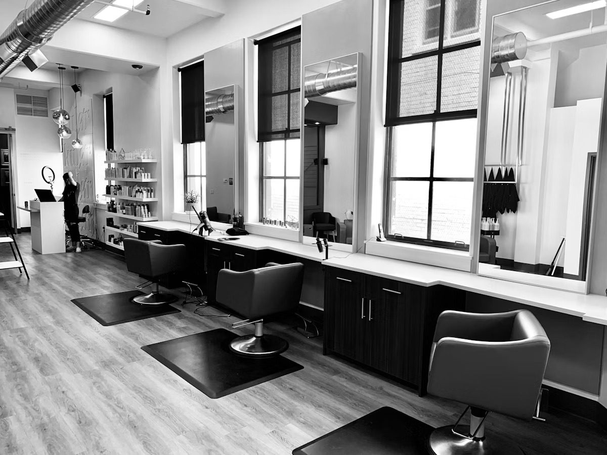
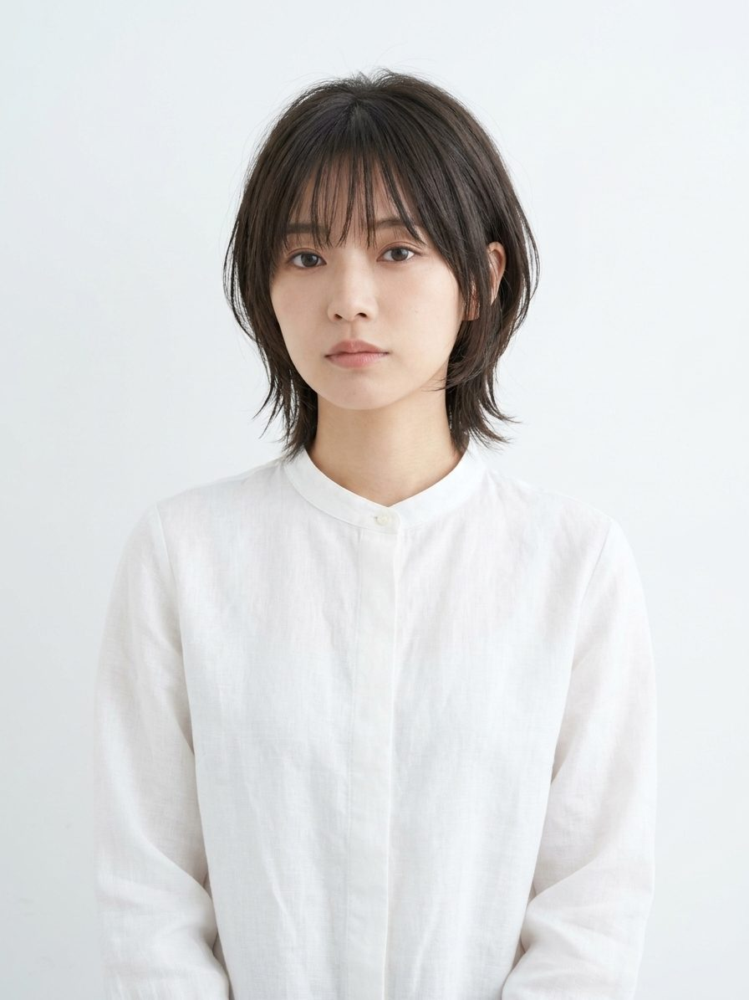
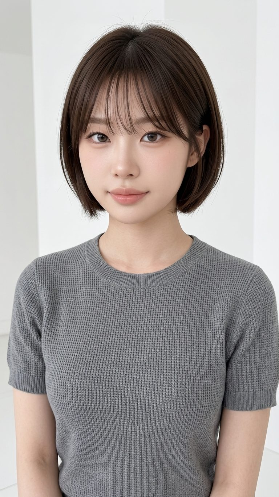

Namba / Korean Trend Hair Salon
Fall in Love With Your Reflection

Concept
SHUは、韓国現地の最新トレンドをいち早く取り入れながら、日本人一人ひとりの骨格・髪質に合わせた「似合わせカット」を追求するヘアサロンです。タッセルカット、ヨシンモリ、エギョモリといった韓国スタイルを、単なる形の模倣ではなく、あなたの魅力を引き出す一着として仕立てます。
髪質・頭皮に寄り添う薬剤選定による艶髪シアーカラーで、透明感と抜け感を両立。トレンドと再現性、その両方に妥協しない空間を難波でご提供します。
10年+
Experience
徒歩3分
From Namba Sta.
3名
Stylists
Style Gallery
ヨシンモリ、レイヤーカット、ショートカットヘア。SHUが手がけるスタイルの一部をご紹介します。


Stylist
Executive Stylist
Karin Uemoto
InstagramStylist
Rise Sato
InstagramJunior Stylist
Ryoko Taga
Instagram※ Instagramリンクは仮設定です。各スタイリストのアカウントURLをお知らせいただき次第、反映いたします。
Access
Map